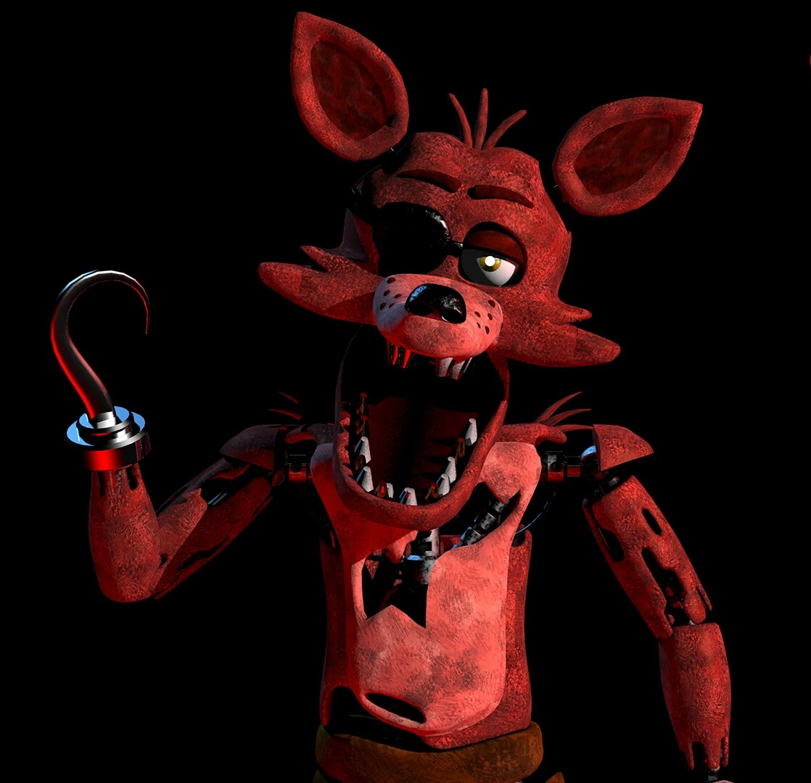

FNAF 1
Опис
Гра де ви Охоронець в Піццерії але там як сказав вам фонгай аніматроніки з 12АМ до 6АМ активні вам треба вижити для цього у вас є двері камери але не використовуйте напрасно! у вас тільки 100 процентів енергії переживіть всі 5 днів і ви виграйте вот ще опис анімтароніків Бонні (англ. Bonnie The Bunny) — фіолетовий кролик з червоним метеликом на шиї та гітарою. Проходить в офіс лише з лівої сторони. Активний в усі ночі, блокує двері для Фоксі. Один з найнебезпечніших супротивників, оскільки чіткої тактики та послідовності в нього нема. Чіка (англ. Chica The Chicken) — жовта курка (а не качка, як деякі помилково вважають) зі слинявчиком на шиї з написом «Let's eat!» (укр. Нумо їсти!). На відміну від Бонні ходить тільки з правої сторони. Як і Бонні може подовгу стояти за вікном біля дверей, змушуючи витрачати багато енергії. Блокує двері для Фредді. Фоксі (англ. Foxy The Pirate) — червоний лис, одягнений як пірат (має пов'язку на оці, замість правої руки гак). Його тіло в багатьох місцях вкрите суцільними подряпинами. Знаходиться в локації «Піратська Бухта» (англ. Pirate Cove). Активний починаючи з другої ночі, а іноді з першої. Атакує гравця лише з лівої сторони. Активізується тоді, коли гравець занадто багато або занадто мало спостерігає за ним. Якщо ви побачили на камері 2А, як Фоксі біжить по коридору, слід негайно зачиняти ліві двері, інакше через декілька секунд він забіжить у кімнату охоронця і вб'є гравця. Це найнебезпечніший аніматронік. Фредді (англ. Freddy Fazbear) — коричневий ведмідь з мікрофоном у лівій лапі. Соліст у групі і лідер аніматроніків. Перші дві ночі вивчає тактику гравця, тому активізується лише з третьої ночі. Якщо він стоїть біля кімнати охоронця, слід терміново зачинити двері, інакше Фредді зникне з камери і нападе на Вас. Також він нападає на Майка з лівої сторони, коли закінчується енергія. Золотий Фредді (англ. Golden Freddy, у файлах гри вказаний як «Yellow Bear») — таємний ворог і п'ятий аніматронік. Має роль «пасхалки» у грі. Виглядає як друга версія звичайного Фредді. Знаходиться ймовірно на кухні, де камера не працює. Може з'явитись у кімнаті охоронця, якщо гравець побачив постер з його обличчям або напис «це я» (англ. «it's me») у «Піратській Бухті» на одній з камер з шансом 1-1,5 %. Найзагадковіший аніматронік. <
головний герой гри Майк Шмідт[4], влаштувався на роботу нічним охоронцем в сімейну піцерію «Freddy Fazbear's Pizza», що належить вигаданій компанії «Fazbear Entertainment»[5]. До Майка працював інший охоронець, і саме він залишає голосові повідомлення щоночі (до тих пір, поки його не вб'ють в четверту ніч, після чого в п'яту ніч будуть тільки спотворені звуки), в яких пояснює похмурі таємниці історії піцерії. Він пояснює Майку, що чотири аніматронних персонажа (ведмідь Фредді, заєць Бонні, курка Чіка і лис Фоксі) ночами оживають, аби їх сервоприводи не закисли від довгого простою. Телефоніст (колишній охоронець; або частіше зветься Фон-гай) також пояснює йому, що якщо один з аніматроніків зустріне людину вночі, він подумає, що вона ендоскелет без костюма, і робот «насильно запхне» її в запасний механічний костюм Фредді, що вб'є людину[6].
Протягом всієї гри будуть зустрічатися газетні вирізки та історії з телефонних дзвінків, в яких стає зрозуміло, що репутація ресторану дуже сильно постраждала. Колишній охоронець згадав інцидент «Укус 87-го», в якому аніматронік відкусив дитині лобову частку голови. Вирізки з газет в Східному коридорі свідчать, що в піцерії сталося масове вбивство, яке імовірно відбулося, коли чоловік заманив п'ятьох дітей в задню кімнату і стратив їх. Пізніше в ресторан стали надходити скарги на те, що аніматроніки стали неприємно пахнути та почали виділяти кров та слиз навколо очей та рота. Один з відвідувачів порівняв їх з «ожилими душами», натякаючи, що мертві тіла дітей приховані всередині аніматроніка, і примари померлих володіють ними[7]. Після сьомої ночі Майка Шмідта звільняють за непрофесіоналізм і поганий запах[8].
1. Виживання при нападі Бонні чи Чікі Спочатку розберемося, що це за аніматроніки. Бонні це синій робот кролик, а Чіка це жовта робот курка. Чіка ходить з правого боку, а Бонні з лівого. Бонні приходить частіше, ніж Чіка, тому йому потрібно більше уваги. Якщо ви не знайшли одного аніматроніка, подивіться на світло дверей! Іноді прислухайтеся до звуків, адже вони можуть бути дуже корисними! Якщо ви почули кроки, порахуйте їх. Кількість кроків це те, скільки камер пройшов аніматронік. Головне, не переплутати Бонні та Чіку! Коли хтось із них зайшов до офісу, вони блокують двері. Коли ти відпустиш планшет, хтось із них нападе. А якщо ти взагалі весь цей час сидів не дивлячись на камери і Бонні чи Чіка заблокували двері, Бонні впускає у відчинені двері Фоксі, а Чіка впускає Фредді. Якщо ти встиг зачинити двері, потрібно знати де стоїть аніматронік. Якщо ти зачинив двері для Бонні, дивися на тінь, включаючи лампу дверей. Якщо у вікні є тінь, Бонні ще там і відчиняти двері небезпечно. Про вікно Чікі буде зрозуміло, включаючи світло, ти побачиш її обличчя. 2. Виживання з Фоксі Починаючи з другої ночі Фоксі буде активним, це означає, що потрібно буде за ним дивитися. Має піратську бухту, і там фіранки. Іноді із фіранок може виглядати Фоксі, і за фіранками можна дізнатися, де він. 1. Фіранки закриті - Фоксі ще не збирається вилазити і просто знаходиться за фіранками. Якість так собі Якість так собі 2. Фоксі відкрив фіранки – це ще безпечно, але варто за ним стежити! Вітаю! Давно я не випускала статей з фнафа, тож... Стоп, якщо це взагалі ніхто не читає, навіщо я пишу початок? 1.-3 3.Фоксі виліз із бухти – треба стежити за ним якнайчастіше, адже потім він побіжить в офіс! Введіть текст Введіть текст 4. Фоксі пішов - негайно покладіть планшет і закрийте ліві двері! Не дивіться інші камери! У вас є кілька секунд, щоб зреагувати. Якість краща Перевіряйте Фоксі кожну хвилину або кожні 40 секунд, він не приходить, коли камери працюють. Якщо ж ви перевірите правий коридор, коли Фоксі пішов з бухти, ви побачите анімацію його бігу. Після цього буде різкий скример!